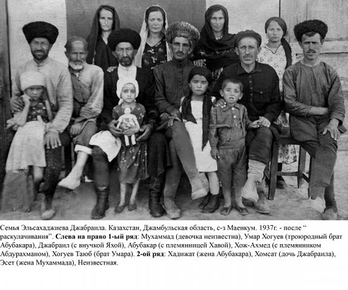
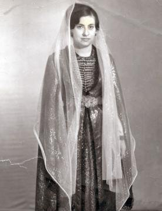
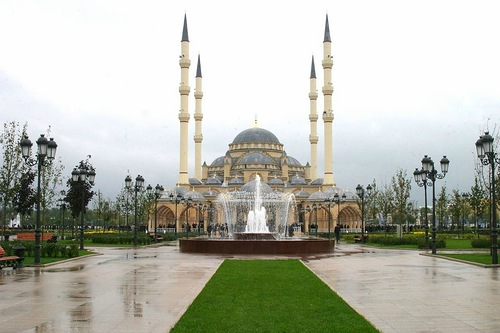

Северный Кавказ славится своим этническим многообразием и богатыми традициями в культуре горных народов России. Безусловно, существуют кавказские обычаи, характерные для жителей целого региона, но, между тем, каждый народ Северного Кавказа неповторим и имеет свои особенные традиции и культуру. К сожалению, после войны в Чечне многие имеют ошибочное представление о чеченской культуре, а то и вовсе не знакомы с ней. Чеченцы – народ, численностью около полутора миллионов человек, в большинстве своем проживающий на Северном Кавказе. Принято считать, что основу чеченского народа составляют 156 тайпов, которые постепенно расширялись, кроме того, из них выделялись новые. И сегодня на вопрос молодому человеку «откуда он?», чеченцы всегда называют аул, из которого происходит род его семьи. Так, в Грозном невозможно встретить чеченца, который на такой вопрос даст ответ «я из Грозного». На ранних развитиях чеченского общества большую роль играла иерархия. Так, только высшие тайпы имели право строить башню, низшие же, как правило пришлые, такого разрешения не имели. Разные чеченские племена отличают различные традиции, но существуют обряды, объединяющие весь чеченский народ и его непростую историю.
Трагические страницы истории этого народа датируются не только чеченскими войнами двадцатого века и Кавказской войной второй половины девятнадцатого столетия. В феврале 1944 года более полумиллиона чеченцев были полностью депортированы из мест своего постоянного проживания в Среднюю Азию. Переломным моментом для народа стал 1957 год, когда Советское правительство разрешило чеченцам после тринадцатилетней ссылки вернуться в свои дома. В рамках политики правительства СССР, народу препятствовали возвращаться в горы, стремясь тем самым побудить чеченцев отойти от своих обрядов и обычаев. Однако чеченскому народу во многом удалось сохранить свои традиции и культуру, передав ее молодому поколению. Так, и сегодня одной из главных традиций чеченского общества является сохранение семейного этикета и почетное уважение к гостям.

Так, даже в бедных семьях, хозяева обязательно хранят лепешки с маслом и сыром для гостя, который может внезапно прийти к ним в дом. Примечательно, что для чеченского народа характерно проявление гостеприимства к любому доброму человеку, независимо от его национальной, религиозной и идейной принадлежности. Множество поговорок, легенд, притч посвящено у чеченцев святому долгу гостеприимства. Чеченцы говорят: «Куда не приходит гость, туда не приходит и благодать», «Гость в доме – радость»... Одно из основных правил чеченского гостеприимства - защита жизни, чести и имущества гостя, даже если это связано с риском для жизни. Гость не должен предлагать платы за прием, но он может сделать подарки детям. Обычаю гостеприимства чеченцы следовали всегда, не забывают о нем и сегодня. Так, в современных семьях по-прежнему гостям всегда предлагают специальную гостевую пищу – отварное мясо с галушками – жижиг галныш.
Исторически галуши готовились из кукурузной муки с добавлением стакана горячей воды, в современное время хозяйки все чаще готовят блюдо из пшеничного теста, для образования которого уже следует добавлять стакан холодной воды. Особое внимание уделяют качеству бульона, в котором готовится мясо – именно в нем потом варятся вылепленные из теста галушки. Чеченские хозяйки говорят, что именно от бульона зависит вкус галушек. Варить галушки следует молча, «чтобы они не разошлись». Отдельно для блюда готовится специальных соус – из лука или чеснока. Так, сегодня в городе хозяйки лук режут кольцами и обжаривают на топленом или подсолнечном масле, в зависимости от вкусовых пристрастий. Согласно чеченским традициям, готовить ежедневно и на праздники должна исключительно женщина. Лишь на похоронах в основном готовят мужчины, что связано с отсутствием чеченок в основной части церемонии. В традиционных чеченских семьях женщина всегда принимает пищу после главы семьи, в современных – нередко все обедают за одним столом, однако дань уважения главе семейства неизменно присутствует.

Сохранились в чеченских семьях и свадебные традиции, а также отношение к жене сына в новой семье. Так, невестка по-прежнему высказывает большое уважение к родителям мужа, называя их не иначе, как «дада» и «нана» - отец и мать. Несмотря на то, что Рамзан Кадыров отменил исторически изживший себя закон «кражи невесты», роль в свадебной церемонии жениха по-прежнему незначительна. В кодексе чеченцев даже написано, что «жених никогда не должен присутствовать на своей свадьбе». Как правило, он всегда находится рядом, отсиживаясь в соседней комнате. Интересный чеченский обычай, дошедший до наших дней, называется «развязывание языка невесты». Согласно чеченской традиции, невеста не имела права разговаривать в доме мужа, не получив на это особое обрядовое разрешение. В современных чеченских семьях этот обряд, как правило, проходит уже в день свадьбы. Так, в начале обряда свёкр спрашивает невесту о погоде, пытаясь ее разговорить, потом, потерпев неудачу, он просит принести ее стакан воды. Когда девушка исполняет поручение отца мужа и возвращается к гостям со стаканом в руках, свекр начинает удивленно допытываться, зачем она принесла ему стакан. После молчания суженной сына, гости по старшинству отпивают из кружки, выкладывая на поднос с кружкой деньги и «разговаривая» невесту. Только после этой церемонии невеста получает полное право разговаривать в семье мужа. Однако, эта традиция совсем не значит приниженного положения женщины в чеченских семьях. Наоборот, согласно чеченским обычаям настоятельно рекомендуется не заключать брак между мужчиной и женщиной без обоюдного согласия, так как это может сказаться на психическом и физическом развитии их детей. По мнению ряда историков, именно поэтому кража невест не является, и никогда не являлась, истинно чеченским обычаем.
Красиво иллюстрирует соблюдение данных заповедей старинная чеченская легенда. «Когда привели в дом жениха девушку, которая согласилась на брак, дабы исполнить волю своего отца и братьев, хотя любила другого, молодой человек уловил в глазах девушки грусть, начал допытываться, пока не узнал причины. А когда девушка поведала о своей большой, как звездное небо, любви, не тронул ее и пальцем. Вывел ее из дома, а вместе с ней и любовь из своего сердца, и темной ночью привел в дом тоскующего возлюбленного. И стали с тех пор юноши друзьями, готовыми отдать жизнь друг за друга. Поскольку, жизнь в наших руках, а любовь от Бога…» Раньше, по традиции, юноша и девушка встречались у родника, поскольку в представлении чеченского народа родник дан людям от создателя. Встречаясь у источника, влюбленные провозглашали стремление, чтобы их отношения были чистыми как его воды. Согласно чеченским обычаям, девушка и молодой человек не могли быть на свидании вдвоем. Мужчину, стаявшему на дистанции от возлюбленной, сопровождал друг, девушку – подруга. Встреча всегда происходила засветло, но в во вторую половину дня, когда девушка, показав себя послушной и трудолюбивой, получала позволение у матери пойти к роднику. Девушки всегда приходили на место встречи после юношей. Не принято среди чеченского народа у девушек и сегодня являться на свидание первыми.

Стоит отметить, что сегодня, как и двести лет назад, чеченец очень остро реагирует на нецензурную брань в адрес женщины, воспринимая это как оскорбление. Это связано с тем, что самый большой позор, если женщина из семьи позволила себе какие-либо отношения с посторонним мужчиной. В Чеченской Республике и сегодня имеются редкие случаи самосуда над женщинами за вольное поведение. Потерявших свою честь женщин убивали и убивают. Однако причина столь жесткого наказания прежде всего кроется в том, что чеченцы придают особое значение наследственности по женской линии. Чеченец вправе взять себе жену любой национальности, хоть и осуждается родственниками и односельчанинами, но большая редкость выход чеченки замуж за иноплеменника. Отметим также, что в числе сохранившихся до наших дней чеченских традиций, есть обязательное умение женщины шить. Так, на свадьбу молодые чеченки неизбежно получают в приданное швейную машину. Среди других традиций, веками почитаемых чеченским народом, следует отметить особое внимание к больному. Больного человека всегда посещают все друзья и знакомые, поддерживая его материально и морально, вне зависимости от возраста заболевшего. Неприлично приходить к больному с пустыми руками. Рядом с больным чеченцы не говорят о недугах, наоборот, стараются его рассмешить. В период болезни чеченца, его родственники и друзья ведут его дела, а в сельской местности – собирают урожай и колют дрова. Согласно чеченским обычаям, мужчина должен обладать такими качествами, как: немногословие, неторопливость, выдержанность, осторожность в высказываниях и в оценках людей. Именно сдержанность - основная черта чеченского мужчины. По обычаю, он не будет даже улыбаться жене при посторонних и не возьмет при знакомых ребенка на руки. Еще одной отличительной чертой чеченцев является внимательность при встрече. Первым делом каждый чеченец спросит: «Как дома? Все ли здоровы?» При расставании и сегодня считается правилом хорошего тона спросить: «Нужна ли моя помощь?» Особенно важно предложить помощь человеку пожилому и просто старшему по возрасту. Безусловно, огромное влияние на культуру современного чеченца оказали войны конца двадцатого века. Так, в Чечне выросло целое поколение молодых людей, игрушками для которых служили настоящие боеприпасы, а трагедии военного времени порождали бессмысленную браваду. Многие дети так и не смогли получить законченного школьного образования. Тяжело стоит и проблема миграции из сел в большие города.Решить эти проблемы сегодня показало себя способным чеченское правительство. Оно не только отсроило города и аулы, организовало рабочие места и спортивные секции, открыло дополнительные школы, но также поддерживает передачи о культуре чеченского народа и изучение родного языка чеченцев. Так, в октябре этого года вышел в свет новый чеченско-русский словарь, автором которого является доктор филологических наук профессор Зулай Хамидова. Помимо того, что в книге содержится свыше 20 тысяч чисто чеченских слов, словарь содержит очень много полезного материала и транскрипции слов. Это особенно важно, поскольку в чеченском языке одно и тоже слово имеет несколько значений и читается с разной интонацией. Стоимость словаря составляет около полутора тысяч рублей ( 1 500 руб). Бережно хранят чеченцы и память о своих музыкантах. Широко известна среди чеченцев песня в исполнении Белухаджи Дидигова, посвященная легендарному абреку Зелимхану из селения Харачой. Наилучшим образом традиции чеченского народа отражает слово «нохчалла», что в примерном переводе на русский означает «быть чеченкойчеченцем» или «чеченственность». Это слово включает в себя свод правил этики, обычаев, традиций, принятых в чеченском обществе, является своеобразным кодексом чести. Так, нохчалла - это умение строить свои отношения с людьми, ни в коей мере не демонстрируя своего превосходства, даже будучи в привилегированном положении. Нохчалла - это особое почитание женщины и неприятие любого принуждения. Чеченец с малых лет воспитывался защитником, воином. Самый древний вид чеченского приветствия, сохранившийся и сегодня, -«Приходи свободным!»
Таким образом, несмотря на тяжелую историю, чеченскому народу удалось сохранить свои традиции и культуру. Безусловно, ход времени внес свои коррективы, но обычаи воспитания в семье, гостеприимства, уважения женщин по-прежнему доминируют среди чеченцев. И значит, время меняет все к лучшему, проверяя народ на прочность моральных принципов и подтверждая чеченскую пословицу: «тот, кто не идет в ногу со временем, тот рискует попасть под его колесо»